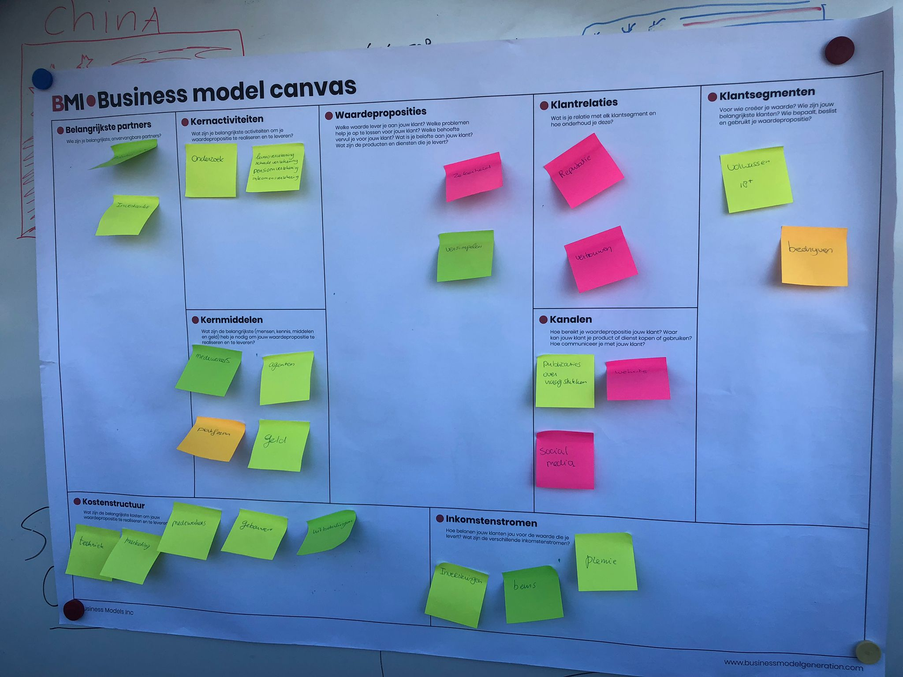
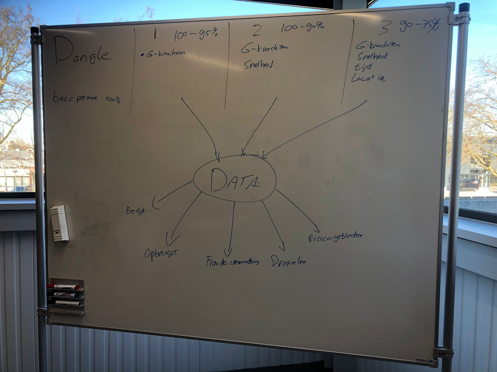

Opdrachten week 2
Tijdens de workshop van Geert Rensen hebben wij gewerkt aan de Casus van Axa. Als eerst hebben wij in groepjes de huidige BMC van het bedrijf in kaart gebracht

Daarna hebben wij nagedacht over oplossingen en een pitch gehouden. Wat ik het meest meeneem van deze opdracht is dat bij een pitch het ook belangrijk is om het team voor te stellen en het probleem te benoemen.

Opdrachten week 3
In week 3 heb ik vier verschillende workshops gevolgd, waaronder de workshop van de IoT schakeling.
Ik zelf had nog nooit eerder met een IoT schakeling gewerkt en het was voor mij dan ook even puzzelen hoe de schakeling werkte.
De kennis die ik tijdens deze workshop heb opgedaan is wat ik meeneem voor de toekomst.

In week 3 was er ook een workshop koken. Tijdens deze workshop heb ik samen met mijn groepje een voorgerecht bereid.
Wat ik meeneem van deze workshop is dat optijd communiceren over verwanderingen erg belangrijk is gedurende een project.

Opdrachten week 4
In week 4 heb ik gewerkt aan een workshop van technology. Daarbij moesten er data via de sensoroen verzameld worden en worden opgeslagen in een database
Ik zelf heb al wel wat ervaring met data, echter had ik nog nooit mijn eigen data verzameld via sensoren. Dit neem ik mee voor in de toekomst als ik data ga verzamelen vanuit sensoren
Opdrachten week 5
In week 5 heb ik samen met Bas, Ryan en Stefano een presentatie voorbereid over reseach en development en waarom 3D printen een geschikte techniek is.
Verder heb ik verder kennis gemaakt met het programma Solidworks en heb ik ontdekt dat ik 3D ontwerpen best wel leuk vind. Ik had nog nooit eerder iets 3D ontworpen.
Tijdensh het 3D ontwerpen ben ik vaak opnieuw begonnen en heb ik verschillende iteraties gedaan. Op de afbeelding hieronder is een van die iteraties te zien

Overkoepelende opdrachten Technology en connection
Voor technology heb ik een plantenIOT schakeling ontworpen.
Vanuit de lessen van Connection is er ook een overkoepelende opdracht.
De opdracht was om een van de casussen te kiezen en daarvoor data te ontsluiten, ETL via API te gebruiken, data analyse te geven over de sensor data en om AI toe te passen
Ik heb er voor gekozen om data te ontsluiten vanuit mijn plantenIOT schakeling en deze schakeling ook te gebruiken voor de rest van de overkoepelende connection opdrachten